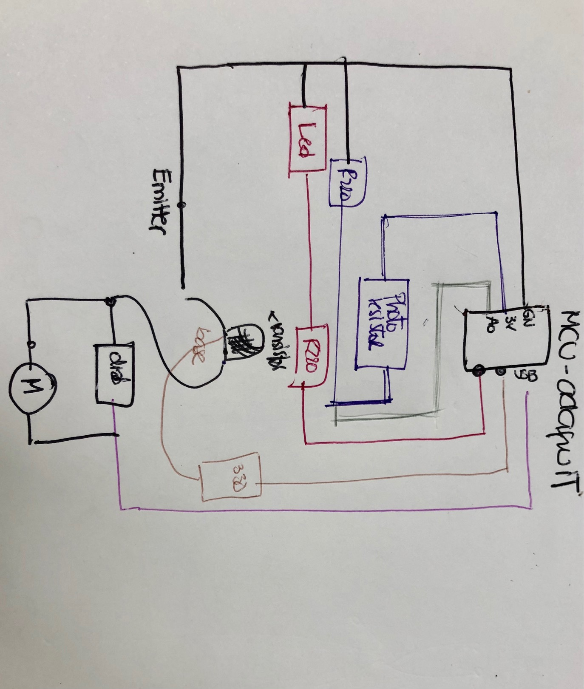
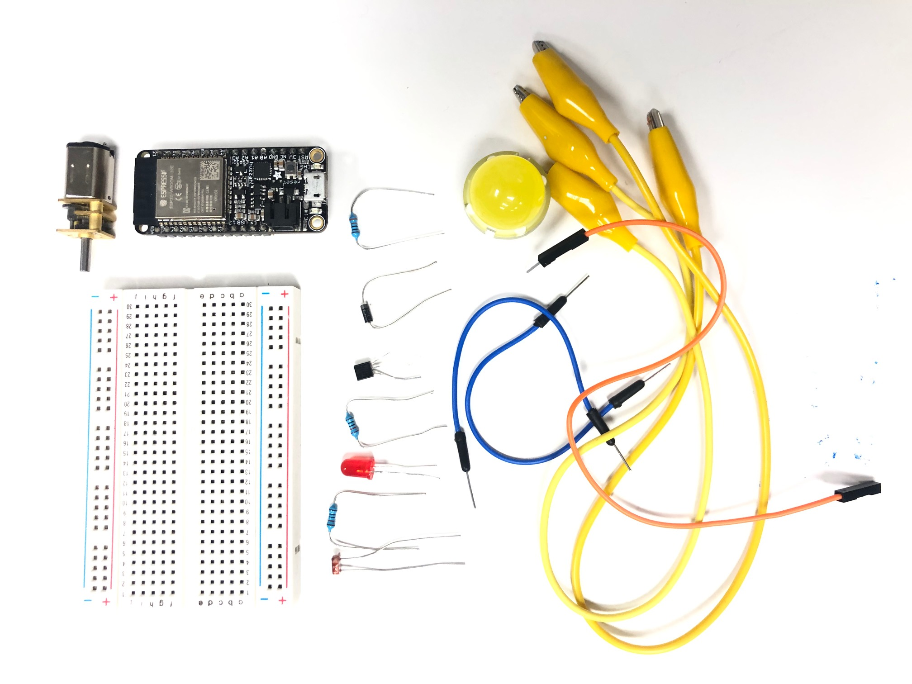
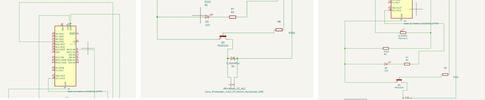
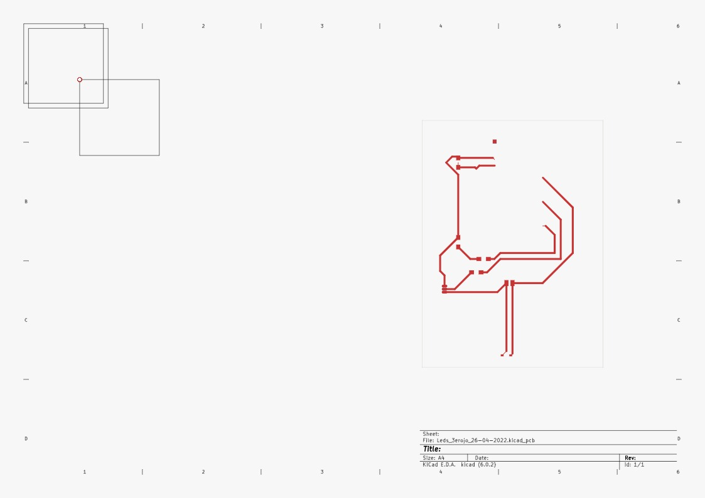

CREATING A CHARACTER WITH A THIRD EYE
THE IDEA: BASIC ARDUINO TO START LEARNING
GENERATE A CIRCUITE WITH ONE LED, ONE PHOTOSENSOR AND A MOTOR
This is a project that I am working with Emilio, and what we want to develop is an artifact, in this case an aluminiun can (because of its light, but probably it can be changed according with our projects) and make it move if it receives extra light from your lamp cellphone. And if we have time to respond with a message. But step by step.:)
THE LOGIC
WE USE WHAT WE HAVE IN STOCK IN THE ARDUINO KIT + A MINIMOTOR
The adafruit ESP32 board, the board, one led (that is going to be changed in the next step), one transistor, one diode, 2 resistors 220, 1 resistor 330, one minimotor, and wires.
THE ELECTRONICS PART


KICAD
UNDERSTAND HOW TO MAKE THE PCB
According to the electronic pieces find the libraries of them in the programm.
 